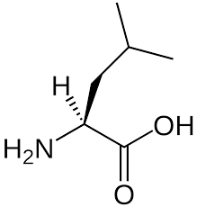

La leucina (abreviada Leu o L)2 es uno de los veinte aminoácidos que utilizan las células para sintetizar proteínas. Está codificada en el ARN mensajero como UUA, UUG, CUU, CUC, CUA o CUG. Su cadena lateral es no polar, un grupo isobutilo (2-metilpropilo). Es uno de los aminoácidos esenciales. Como un suplemento en la dieta, se ha descubierto que la leucina reduce la degradación del tejido muscular incrementando la síntesis de proteínas musculares en ratas viejas.3 La leucina se usa en el hígado, tejido adiposo, y tejido muscular. En tejido adiposo y muscular, se usa para la formación de esteroles, y solo el uso en estos dos tejidos es cerca de siete veces mayor que el uso en el hígado.
| Simbolo de una letra | Simbolo de dos letras | Imagen del aminoàcidos |
|---|---|---|
| L | Leu |  |
Informacìon obtenida desde la pagina Wikipedia